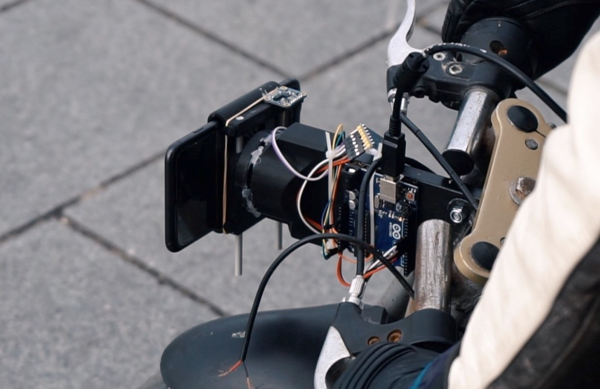
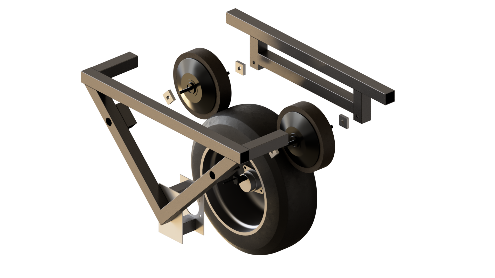
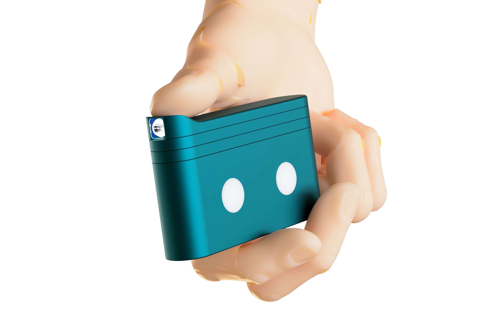

About me
Hi there. I'm Evren Ucar.
I am Evren Ucar, a TU Delft graduate and freelance industrial design engineer. Most of my work happens in the messy part between a rough idea and something you can hold, test, break, and improve.
That usually means product development through mechanics, electronics, prototyping, and practical problem-solving. I like making progress tangible early, then improving it through use.
Outside of work I keep gravitating to the same kind of making through analog photography, lino printing, metalworking, and other hands-on processes. At OMA Collective I am currently helping build a darkroom and a small metal casting kiln, while also getting pulled into resin printing, welding, machine building, and woodworking.
Background
TU Delft graduateWork
Freelance industrial design engineerCurrent focus
Darkroom and small kiln build at OMA CollectiveWork
What I usually help with
I work best when a project needs both thinking and making. The details do not need to be solved yet. They just need to be worth testing.
Product development
Turning early concepts into workable product directions with clear tradeoffs and physical proof.
Prototyping
Building mockups, test rigs, and practical iterations that reveal what actually needs to change.
Mechanics and electronics
Bringing enough engineering into the process to make ideas behave in the real world.
Projects
Selected projects
The longer case studies are still being rebuilt. For now the short summaries stay on the main project page.

A motorcycle camera gimbal concept looking at mounting, stability, and a more usable filming setup on the road.

A mobility exploration shaped by balance, compact packaging, and the practical feel of a rideable object.

A lighting concept for hands-on work, with attention to usability, placement, and workshop conditions.
Process
How I like to work
I prefer getting to a physical version early. A rough object usually answers more than a polished slide.
Start simple
I try to get to a physical version early, even if it is rough.
Test honestly
The point is not to protect the idea. It is to learn where it fails.
Improve in context
Changes matter more when they come from use, handling, assembly, and real constraints.